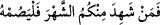
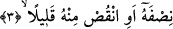

içindir. Her ne kadar gece içinde meydana gelen olay bütün geceyi kapsıyor ise de gece
yine de zarftır. Kelimenin başında “fi” harf-i cerri hazfedilmiş ve fiil doğrudan doğruya
“leyl” kelimesine bağlanmıştır ve böylece kelime mansup olmuştur.
Çünkü harf-i cerrin ameli fiilde olamaz. Nasb ref’den daha yakındır, bundan dolayı
bâzı âlimler “leyl” kelimesinin kullanılıştaki zâhirî duruma bakarak “mef’ul” olduğunu
söylemişlerdir. Nitekim; “__WORD__/Öyle ise sizden ramazan ayını idrak
edenler onda oruç tutsun.” (el-Bakara, 2/185) âyeti ile, “__WORD__/Arşın sâhibi
Allah, kavuşma günüyle korkutmak için kullarından dilediğine irâdesiyle ilgili
vahyi indirir.” (el-Mü’min, 40/15) âyet-i kerîmeleri de aynı durumdadır. Nitekim ve
benzeri yâni; “kim kadir gecesini ihyâ ederse...”[150] gibi ifâdeler de aynı şekildedir.
Çünkü “ihyâ” -her ne kadar zâhiren gece üzerinde görünüyorsa da- fakat maksad namazı
ihyâ etmek ve geceleyin Allah’ı zikretmektir. Gecenin/leylin sınırı güneşin battığı andan
fecrin doğduğu ana kadar olan zaman dilimidir.
Âriflerden biri şöyle der: Allah habibi ile münâcâtı istedi ve ona gecenin ortasında
kalkması için seslendi. Derler ki, geceleyin namaza kalkmak ve Allah Teâlâ’ya
münâcâtta bulunmak dünyadan değildir. Tam tersine cennettendir. Çünkü zevk ehli bu iki
fiilden almış oldukları tadı dünyanın tadına benzetmiyorlar.
3. (Gecenin) yarısını (kıl). Yahut bunu biraz azalt,
“(Gecenin) yarısını (kıl).” Burada yarısı anlamına gelen “nısfehû” kelimesi
“gece”nin, istisnâdan geri kalan kısmından bedel-i küldür.
Yarım anlamına gelen “nısf” kelimesi herhangi bir şeyin iki şıkkından birisi demektir.
Buna göre âyetin mânâsı; “Ey bürünen, gecenin yarısında kalk” demek olur. Az bir kısmı
istisnâ edilen gecenin “yarı” kelimesiyle ifâde edilmesi namaz kılınan kısma son derece
önem verildiğini ortaya koymak, bunun fazîletine işâret etmek ve geceleyin namaz
kılmanın -sevabın çokluğu açısından- gecenin çoğunda namaz kılmak mertebesinde
olduğunu vurgulamak içindir. Uzunluk açısından birbiriyle eşit oldukları hâlde gecenin
ibâdetle geçirilen yarısına oranla ibâdetsiz geçirilen diğer yarısının “az” olarak
nitelenmesi mümkündür. Çünkü ibâdetsiz geçirilen yarı, fazîlet ve şeref açısından öbür
yarıya eşit değildir. Çünkü itibar kemmiyyete değil, keyfiyyetedir.
Bâzı tefsir âlimlerine göre âyette gecenin yarısının “az” olarak gösterilmesi ibâdetle
geçirilen kısma nisbeten değil de gecenin tamamına nisbetendir. Çünkü aksini
düşündüğümüzde; birbirine eşit olan iki yarımdan birinin diğerinden daha az olduğunu
söylemiş oluruz. Böyle bir düşünce tarzının faydadan uzak olduğunu ve âyetin zâhirine
uymadığını söylemek zorundayız. Nitekim İrşad’da bu şekilde kayıtlıdır.